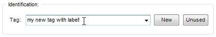
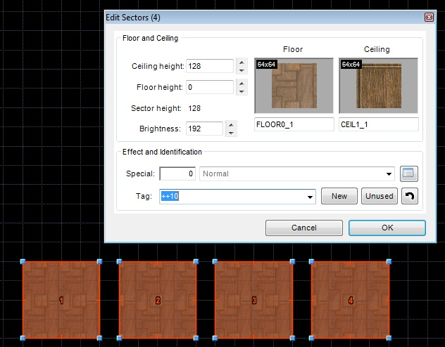
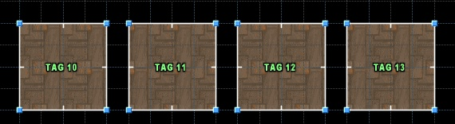
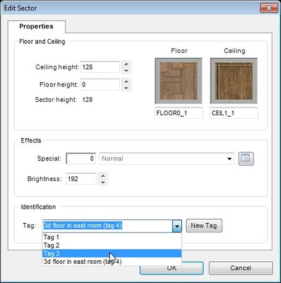
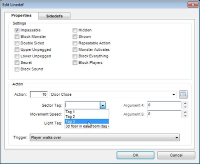
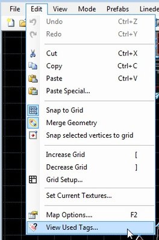
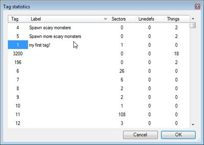
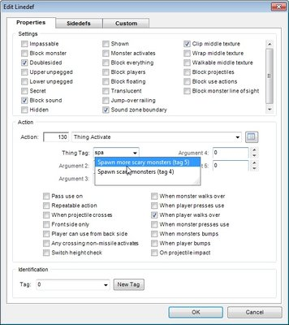
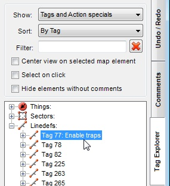

Two methods can be used to assign a new tag to a map element.
Pressing "New" button will find a tag number, which is not used by any map element or any action argument, which expects a tag (classic Doom Builder 2 behaviour).
Pressing "Unused" button will find a tag number, which is not used by any map element of current type (e.g. not used by any linedef in the map, if the button is pressed in Edit Linedefs form).
You can enter "++N" or "--N" as a tag to increase or decrease tags by N.
When several map elements are selected, you can set a tag range by entering ">=N" or "<=N" as a tag.
Example: to tag selected sectors starting from 10 and going up, enter ">=10" as the tag and press OK button:

The result:

Warning: setting tag ranges this way doesn't check if tags being set are already used in the map. If you need that functionality, set tag ranges using the Tag Range plugin.
| If a tag is already used in a map, you can pick it from the list: |  |
This also works for action arguments. Only relevant tags will be shown in this case (e.g. if an argument is a sector tag, only sector tags will be shown in the drop down). |
 |
You can add labels to tags. This can be done in several ways:
1. If you type any text in the tag selector, then an unused tag number will be found, and your text will be assigned to it as a label (this won't work for action arguments).
2. You can use the Tag statistics form to view all tags used in a map, and view and edit labels, if any are assigned to them:


Double-click on a value in the "Label" column to edit the tag label.
Double-click on Sectors, Linedefs or Things cells to select map elements, right click to open their properties.
All columns are sortable.
Tag labels support autocompletion. Start typing a tag label to show the autocompletion list:

When sort mode is set to "By Tag", tag labels will be shown in the Tag Explorer:
